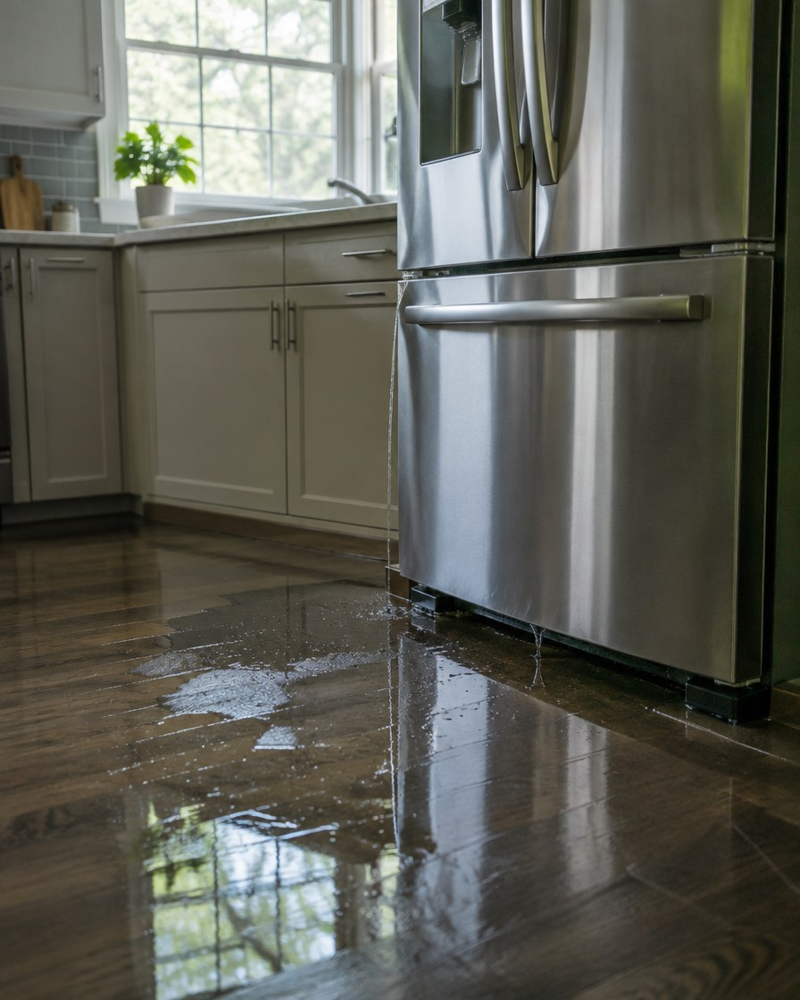

Water loss
Ice-maker line failures: contested residential water claims
Ice-maker line failures are contested not because they are excluded — carriers often argue the leak was gradual. Document the sudden failure, water path, and drying plan before the adjuster visit.
Free claim help →